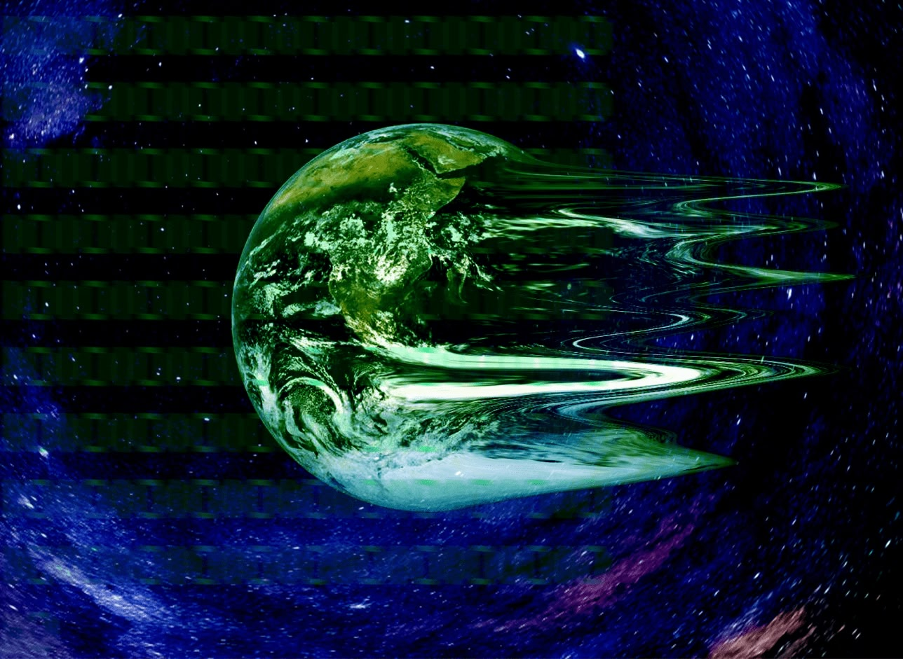

Recente afleveringen
Aflevering 2
Aflevering 3

Wat is de simulatie theorie
----
Misschien ben je wel bekend met de populaire Matrix films. Hierin komt de hoofdpersonage erachter dat hij niet in de echte wereld leeft maar in een computersimulatie. Kort gezegd betekent dat dat alles wat we doen, denken, ruiken en voelen niet echt is. Maar dat we bestuurd worden door computers zonder dat we dat zelf doorhebben. In onze podcast afleveringen gaan we verder onderzoek doen naar deze theorie en komen we misschien een stapje verder bij de waarheid
Bekijk de afleveringen →Waarom doen we dit
----
We zijn begonnen met het maken van de podcast nadat we een hele dag met z'n drieën over de simulatie-theorie hadden gepraat. Iedereen had zijn eigen verhaal en bevindingen over waarom we in een simulatie zouden leven. Sommigen ervaren een déjà vu en zien dit als een soort fout in de simulatie. Anderen kunnen niet om het feit heen dat natuurwetten soms niet consistent zijn. Nadat we al onze verhalen hadden gedeeld, bedachten we ons dat er misschien meer mensen zijn die hierover willen meepraten en hun eigen ervaringen willen delen. Voor ons lijkt een podcast de beste manier om anderen mee te nemen in onze verhalen én in hun eigen ervaringen
Over ons